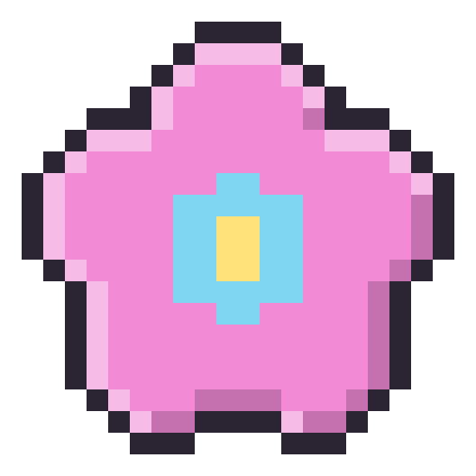
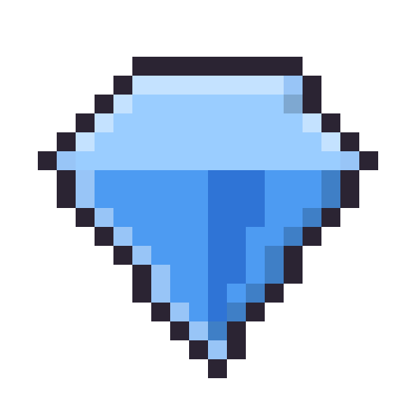
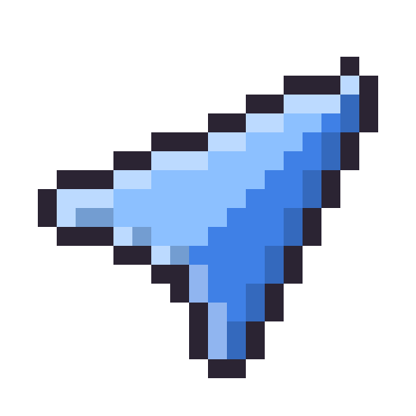

Helping young minds stay in tune.Play. Practice. Build focus for real life.
Pick up the toys!drag them around with your finger
Unpacking the toys…
In developmentHeadphones recommendedAbout five minutesA game, not a diagnosisMade in AucklandIn developmentHeadphones recommendedAbout five minutesA game, not a diagnosisMade in Auckland
Our mission
Attention practice kids actually want to open.
Through play, Attune helps children practise staying focused, listening to instructions, and following them when the world gets noisy, whether or not they have an ADHD diagnosis.
one instruction to follow……and so much else going on
The challenge
Listening takes more than hearing.
In classrooms, at home and on the playground, children have to pick out one voice, hold on to what it asked, and act on it while everything else competes. Attune turns that into four skills to practise.
01
Find the message
Notice the voice or cue that matters among competing sounds.
02
Stay with it
Keep attention on instructions across a longer sequence.
03
Hold the instruction
Remember what to do long enough to respond.
04
Choose a response
Ignore a tempting decoy and act on the relevant instruction.
How it works
Short missions. Feedback straight away.
Each mission gives one instruction, one clear action, and an instant answer. As children progress, they listen for longer, and more sounds compete for their attention.
Try a tiny one here. Read what Mr Croc asks, ignore the chatter, and tap the right star. It gets noisier each round.
Mission · Classroom★ 0 / 5
Press start. Mr Croc is about to ask you something.
Try it
Three builds you can play today.
Each takes about five minutes. Headphones help.
start here!
Preliminary test
Focus check
Three rooms, about five minutes. A story read over rising classroom chatter, instructions that get interrupted, then something long and dull while gossip competes. It sets itself to the player’s age.
Five five-minute places (a mall, a theme park, a football field, a science lab and an office) plus a skills mode that trains noise filtering, instruction tracking and focus stamina one at a time.
Where Attune started: themed worlds (space, sky, fantasy, Jurassic) unlocked one at a time. The idea has since narrowed onto listening in the ordinary noisy places children actually have to listen in.
The finished game moves from grey-box prototypes to warm, characterful rooms: a classroom with a crocodile teacher, pixel-art classmates, and plenty going on at the edges.

A room worth sitting in
Characters children want to listen to, so staying with a long instruction feels like part of the story rather than a test.

Distraction you can see
The things competing for attention are drawn into the scene, not just mixed into the audio, so a child can tell what pulled them away.

One continuous line
The art comes from the first build, the missions and scoring from the prototypes you can play today. Nothing here starts over.
Who it is for
For kids who find listening hard. Diagnosis or not.
Attune is being designed for children who find listening and staying with instructions difficult, including children with ADHD and children without a diagnosis.
Attention differs from child to child, and nothing here assumes every child’s needs are the same.
Parents
See what a session asks your child to do before they play.
Teachers
Understand the game and try it with a class.
Clinicians
Send feedback from a clinic, or ask about trying it with us.
Kids
Five minutes, headphones on, and a room full of characters.
For parents
Could it be more than not listening?
Inattention is quiet and easy to miss. Walk through an ordinary day, spot twelve signs, and see what it can feel like from your child’s side, and what it can do to friendships and family life.
The research gives Attune a starting point for design. It does not establish that this game treats ADHD.
Research describes attention as staying with a task, selecting what matters, and shifting focus when needed. Attune uses those ideas to design listening games. Evidence about attention training is mixed, and we would rather say so here than oversell it.
Before making stronger claims, we plan to check whether children enjoy the tasks, improve on new listening challenges, and show any meaningful changes outside the game.